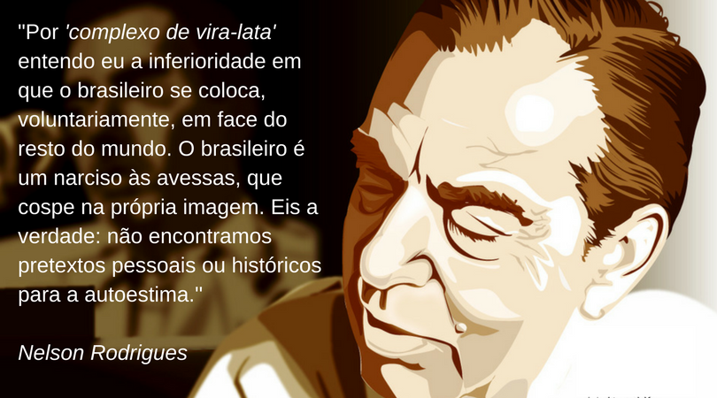

Complexo de
Vira-latas
Situação Comunicativa
Complexo de Vira-latas é nada mais do que uma alusão ao comportamento do brasileiro ao se achar inferior quando comparado ao habitante de outros países. O termo foi utilizado como uma crítica à campanha da Seleção Brasileira na Copa do Mundo de 1958, no entanto, o entendimento do termo “Vira-latas” pode ser estendido a todos os setores da sociedade.
Cena Enunciativa
Ao escrever uma crônica para a revista Manchete Esportiva, Nelson Rodrigues faz uma crítica ao comportamento da Seleção Brasileira de 1958, que mesmo tendo um futebol genial, acredita ser inferior a outros países. O autor entende como o brasileiro se coloca voluntariamente na condição de inferioridade e o faz em tudo o que o coloca frente ao restante do mundo.

Progressão discursiva
A crônica inicia com o comentário sobre o pessimismo da Seleção
Brasileira ao partir para a Copa do Mundo em 1958, em contraste com
esperança frenético dos torcedores em todo o país. Parte do pessimismo devese à derrota para o Uruguai na final da Copa de 1950 no Maracanã.
O autor fala sobre a frustração que todos tem diante do placar do
O autor fala sobre a frustração que todos tem diante do placar do
jogo da final da Copa no Brasil, no qual o Brasil foi derrotado por 2X1 para o
Uruguai. Não é apenas ter perdido o jogo, mas também carregar a amargura
de perder a final da Copa do Mundo em casa, em pleno Maracanã.
Ainda é a frustração que leva os brasileiros a desacreditar na
Seleção, como o pânico de sofrer novamente uma desilusão, tal qual a derrota
da final de 1950. Até mesmo o time, embora tenha um futebol maravilhoso,
desacredita de si, colocando-se na condição de inferior diante dos outros
países, e coloca-se nessa condição voluntariamente, razão pela qual Nelson
Rodrigues denomina como “Complexo de Vira-latas”.
Ao final da crônica o autor coloca que o problema não é o futebol,
tampouco técnica ou tática, mas sim de ter fé em si mesmo e que o brasileiro
precisa convencer a si mesmo que tem futebol para dar e vender. Outro
problema é o brasileiro se considerar inferior não só no futebol, mas em todos
os setores da sociedade.
Comentário Final
Ao escrever a crônica, Nelson Rodrigues critica a Seleção Brasileira, e também os torcedores de todo o país, por se considerarem inferiores diante do restante mundo, no que chama de “Complexo de Viralatas”. Para tal comentário faz alusão à derrota sofrida pela pelo Brasil na final da Copa de 1950 e considera que a descrença na seleção é nada mais do que o medo de sofrer uma nova desilusão como a sofrida naquela Copa. Nelson Rodrigues ainda coloca que o problema é apenas se colocar voluntariamente na condição de Vira-latas, o que é desapropriado porque o Brasil tem futebol para dar e vender.
Imprimir